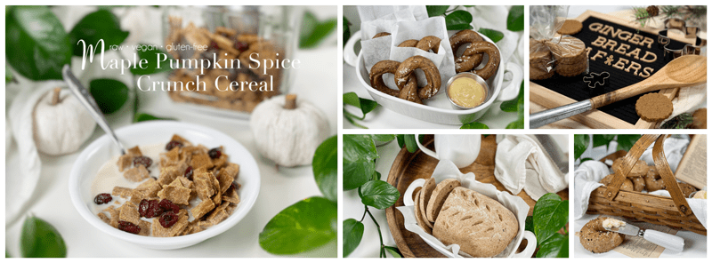
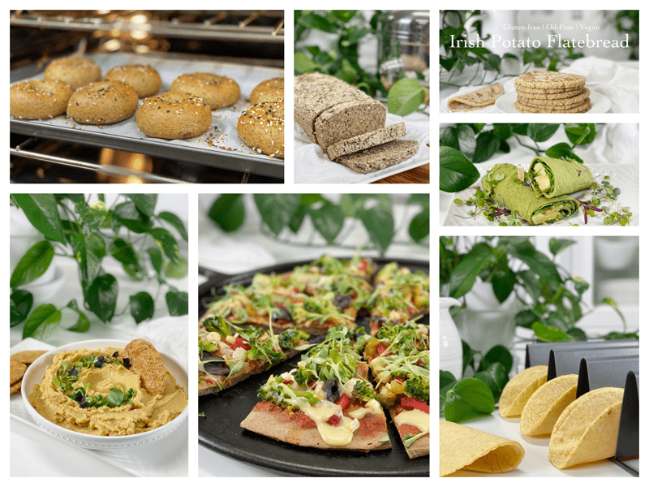
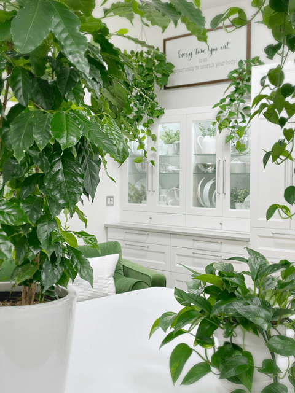
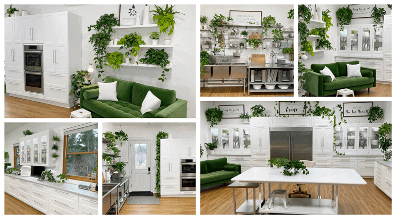

Welcome to Nouveau Raw
Let me take you on a Culinary Experience
- Over 1,300 raw, vegan, whole-food, nutrient-packed, tried-and-tested recipes.
- Over 150 COOKED vegan, whole-food, nutrient-packed, tried-and-tested recipes.
- Over 50 Houseplant posts, sharing my experience, care, and interior landscaping ideas.
- Resources are great for all lifestyles, including raw, dairy-free, gluten-free, vegan, soy-free, vegetarian, and beyond.
- Great “cooking” isn’t just about recipes, it’s also about techniques. I cover a wide variety of great techniques, including blending, dehydrating, spiralizing, marinating, and ideas for giving food that cooked appearance while still maintaining the nutrients and more.
- Favorites: Our software will now save your favorite recipes on our server so no matter what computer you use, your favorite recipes will always be available.
- Printable recipe PDFs – Customize and create your own offline raw recipe cookbook.
- Regular emails where I share the latest and greatest recipes that I continue to create while on our culinary journey together.
- I will continue to respond to your questions and comments personally.
- No ads, flashing banners, or other annoying things that don’t have anything to do with your interests.

You don’t have to be 100% raw or 50% or even 10% raw, no really.
In fact, most of my readers do not eat 100% raw, which is just fine, I don’t either. From time to time, you’ll even find that some of my recipes involve small amounts of cooked ingredients. To me, it’s all about finding our balance as we aim for optimal health. That picture most likely will look different for you than it does for me. I designed this site for everyone who is simply interested in bringing more raw whole foods and healthy eating into their life.
Amiesue.com / NouveauRaw is totally supported by your subscriptions; my loyalty is to you, my readers, not to advertisers, or sponsors. So you can always be sure that you are getting what I really think, not what I’m paid to think.

What are my credentials?
But here are the most important credentials…
- I have literally clocked more than 1,500 days in the kitchen, experimenting with raw and whole-food ingredients.
- My recipes have been taste-tested and approved (!) by all kinds of people from all over the world. Those that are healthy eaters, those that are foodies, those that are fast food restaurant groupies, and most importantly… children of all ages.
But don’t take my word for it! Read what NouveauRaw readers are saying…

“Brilliant! You are such a raw food genius. I appreciate all the work you put into making these recipes…” ~ Alice M ~
“You are an amazing chef, dear Amie-Sue! I love you so much; you are my ‘raw’ model! Please never stop doing what you are doing and teach me more. I’ve learned so much from you and your beautiful, kind soul. God bless you with happiness and good health forever, amen! Appreciate you more than words can describe, XO Your biggest fan.” ~ Sharon K. ~
“I’m well into my senior years and wanted to live as healthy as possible for as long as I live. It seems whenever I’m having a health issue, you come up with a recipe related to it. I love your recipes and am feeling more energetic and healthier than I have in a while. My family benefits too because I share your great recipes with them; even my meat & potatoes man enjoys them. Thank you.” ~ Sandra D. ~
“When I decided to change my diet nearly four years ago, one of the first blogs I started to read was Nouveau Raw. I have learned numerous tips and made many of Amie Sue’s wonderful recipes. Whenever I want to make something new, her blog is the one I turn to. I think she’s a raw food genius!” ~ Randie D. ~
“I feel it’s important to share with you how much your website has helped me gain some much-needed knowledge as I am just beginning my Raw Food Journey and was feeling a little overwhelmed out there in internet land!! And more importantly, to say THANK YOU for your inspiration, humor, and love of RAW!!… Namaste” ~ Tina ~
“Wow, I really appreciate everything here. This work is unbelievably awesome. You should be proud of yourself because this is amazing. I am sharing your website with everyone I know, I think that is important to share good things and keep people proud of their hard work. I cook every single day, and I know how hard it is. I wish I could give you a huge hug by the computer :) Success and cheers!” ~ Paula ~
My Studio Kitchen

“Just wanted to express my appreciation for your website. It is one of the best websites I know for raw food recipes, it’s beautiful and creative and loving and giving. Please continue!!!” ~ Daniela ~
“Hi Amie, I love your site. I try a lot of your recipes. I am a raw chef myself and sell my products at local markets in Canada. I get a lot of inspiration from you……right now in my dehydrator I have the cheesy crackers and Biscotti …they are a big hit….. love that you are doing…much joy DeboRAW” ~ Deborah ~
“Amie Sue, I love this website!! It is amazing!! I spend hours and hours reviewing and reviewing recipes and information. I love your stories as to how you come up with the recipes. The pictures of the recipes as you progress through it is so helpful. It is so educational. I had read some books on raw foods but had not tried any recipes. I have tried several of your recipes now. This raw chocolate mousse is terrific. Thank you so very, very much for sharing all of this with everyone. You are an amazing, talented person. Have a blessed day.” ~ Shirley ~
Finally…
Most of all, I want you to know that it is my passion to help you become a great raw chef! I want you to understand what makes foods work together and how to use your own intuition. And then, with the skills you learn here, you will be able to navigate a healthy eating practice that will serve you for the rest of your life.
Remember, it is not about limiting or giving up the comforts and joys of eating; it is about expanding those options.
© AmieSue.com